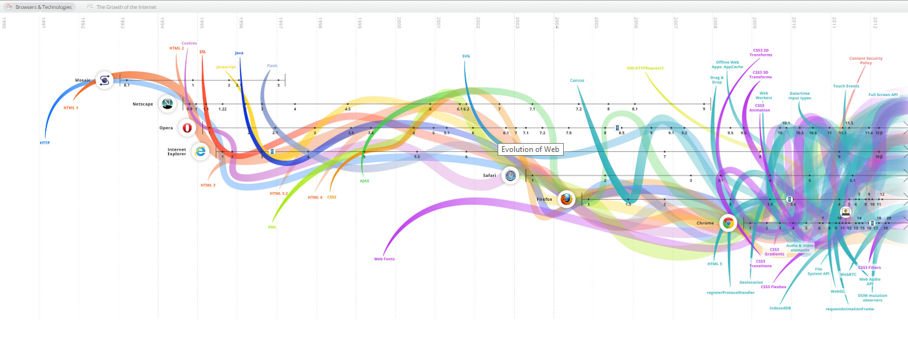
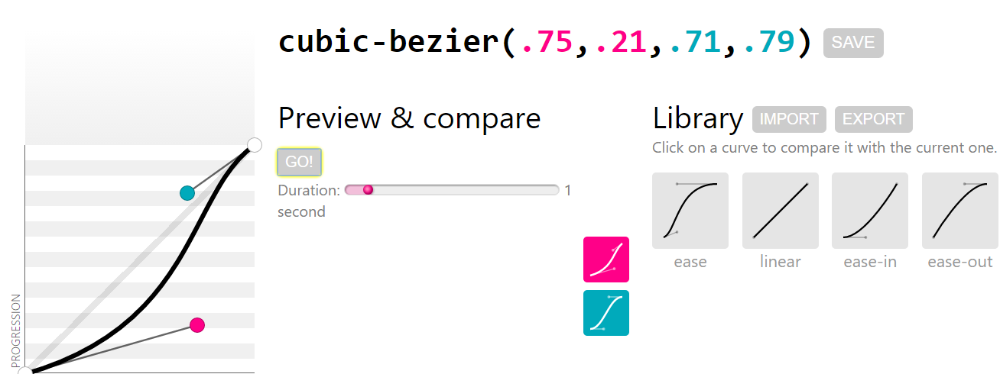
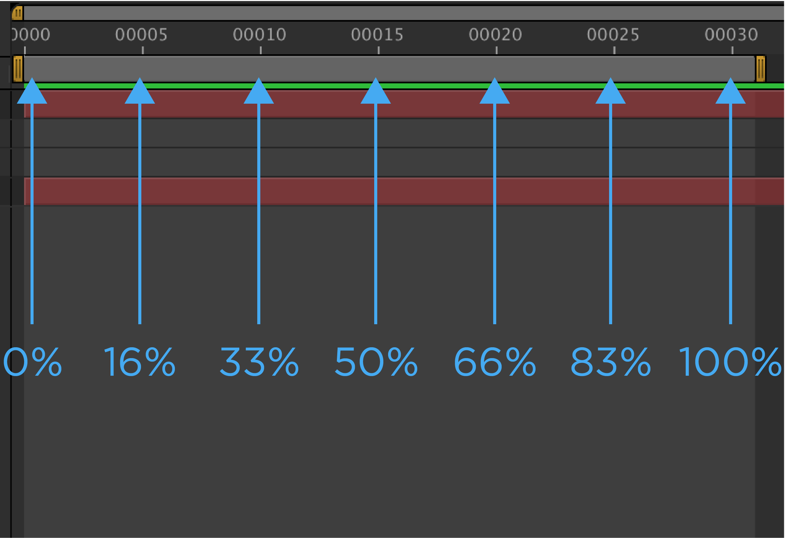

Понятие анимации
Общее определение анимации. Анимация — технология мультимедиа; воспроизведение последовательности картинок, создающее впечатление движущегося изображения.
Если говорить о CSS, анимацией называется плавное изменение свойств элементов страницы.
История развития веб технологий

Кратко несколько фактов
- В 2004-м году был представлен элемент canvas для компонента Mac OS X WebKit
- В 2006-м был опубликован 1-й черновик HTML5 (анимация в HTML5 canvas)
- В 2009-м году 20-го марта был опубликован первый публичный черновик по технологии CSS Transitions и CSS Animations
- До апреля 2010-го года в вебе был распространен Flash. После выпуска компанией Apple первой версии планшета iPad и презентации все поменялось. Стив Джобс заявил что Flash как технология изжила себя из-за проблем с производительностью на мобильных устройствах. После этого начался рост использования HTML5 и CSS3 для анимаций.
Появление технологий CSS анимаций в браузерах
CSS Transitions
- Safari 3.1
- 18 марта 2008
- Chrome 1.0
- 2 сентября 2008
- Opera 10.5
- 2 марта 2010
- Firefox 4
- 22 марта 2011
- Internet Explorer 10
- 13 сентября 2011
CSS Animations
- Safari 4.0
- 11 июня 2008
- Chrome 1.0
- 2 сентября 2008
- Firefox 5
- 20 апреля 2011
- Internet Explorer 10
- 13 сентября 2011
- Opera Presto 2.10
- 23 апреля 2012
Виды анимаций в вебе
Необходимость анимации в вебе
- Для оживления страницы, добавления интереса к тексту
- Обратная связь, интерактив с элементами страницы
- Привлечение внимания при появлении уведомлений
CSS transitions - переходы
Перевод определения transitions
CSS transitions — технология позволяющая контролировать скорость изменения CSS свойств путем задания интервала в течение которого происходит изменение, используя заданную функцию плавности, а так же задавая задержку перед выполнением изменений.
Можно анимировать одно либо несколько свойств используя разные параметры (разную длительность, разные функции плавности и задержки).
Если не указывать свойство, переход будет применяться ко всем свойствам. Если не указывать функцию плавности будет использована функция плавности по умолчанию. Если не указана задержка, переход будет выполнен без задержек.
CSS свойства, опредяющие переходы (CSS transitions)
transition-property
Используется для задания анимируемого свойста,
его значением может быть любое из поддерживаемых свойств перечисленных в списке,
в зависимости от браузеров поддержка анимации тех или иных свойств может различаться.
Синтаксис:
transition-property: <анимируемое_свойство_элемента>;
transition-property: color;
Если свойств несколько их перечисляют через запятую.
Синтаксис:
transition-property: <анимируемое_свойство_элемента_1>, <анимируемое_свойство_элемента_2>, <анимируемое_свойство_элемента_3>;
transition-property: left, top, color, background;
transition-duration
Определяет длительность перехода, указывается в секундах!
Синтаксис:
transition-duration: <длительность_перехода>s;
transition-duration: .5s;
transition-duration: 0.8s;
transition-duration: 2s;
ошибка:
transition-duration: 1;
Несколько длительностей перехода как и все остальные свойства указываются через запятую.
transition-duration: .5s, .5s, 1s;
Если есть несколько свойств а указана одна длительность перехода, она будет применяться ко всем свойствам.
transition-timing-function
Определяет функцию плавности выполнения анимации.
Easing - Функция плавности которая определяет однородность выполнения анимации. Для придания реалистичности, движение делается ускоренным либо замедленным на разных участках течения времени.
Большинство функций времени может быть определено графиком соответствующей функции, образующей четырьмя точками кривую Безье.
Кривые Безье – самые фундаментальные кривые, применяемые в основном в компьютерной графике и обработке изображений
Сокращенные свойства кривой Безье

Синтаксис:
transition-timing-function: <функция_плавности>;
<функция_плавности> может быть одним из значений приведенных ниже.
- ease — то же что и cubic-bezier(0.25, 0.1, 0.25, 1) - ускорение вначале и замедление в конце. Значение по умолчанию.
- linear = cubic-bezier(0, 0, 1, 1) - без ускорения и замедления
- ease-in = cubic-bezier(0.42, 0, 1, 1) - замедление в начале и равномерность в конце
- ease-out = cubic-bezier(0, 0, 0.58, 1) - равномерность в начале и замедление в конце
- ease-in-out = cubic-bezier(0.42, 0, 0.58, 1) - замедление потом ускорение и замедление в конце
- step-start = steps(1, start) - при выборе этого значения идет резкое изменение свойств
- step-end = steps(1, end) - при выборе этого значения идет резкое изменение свойств
- steps(<число_интервалов_в_функции>[, [ start | end ] ]) - start и end - указывают точку в которой происходит изменение значения (start - начало, end - конец). При выборе этого значения идет резкое изменение свойств
- cubic-bezier(<координата_x_точки_P1>, <координата_y_точки_P1>, <координата_x_точки_P1>, <координата_y_точки_P2>) - позволяет задавать различные эффекты с ускорением и замедлением. Максимальное значение координаты 1, минимальное 0
transition-timing-function: ease-in-out;
спецификация объясняющая свойство.
transition-delay
Определяет паузу после которой начинается анимационный переход. Значение задается в секундах!
Синтаксис:
transition-delay: <длительность_паузы_в_секундах>s;
transition-delay: 0.5s;
transition
Наиболее часто используют свойство transition — это сокращенный вариант записи параметров перехода.
Синтаксис:
transition: <анимируемое_свойство_элемента> <длительность_перехода> <функция_плавности> <задержка>;
transition: all .3s ease-in .1s;
В сокращенном варианте записи параметры для разных свойств перечисляются через запятую:
Синтаксис:
transition: <анимируемое_свойство_элемента_1> <длительность_перехода_1> <функция_плавности_1> <задержка_1>, <анимируемое_свойство_элемента_2> <длительность_перехода_2> <функция_плавности_2> <задержка_2>;
Задержка как значение свойства используется довольно редко, поэтому в основном используют первые три параметра. Поэтому в примере 4-й параметр (задержка) опущен.
transition: color .5s ease, background 1s ease-in, border-radius 1s ease;
Так же необязателен параметр указывающий функцию плавности, если он не указан используется значение ease.
transition: color .5s;
Как реализовывать переходы для эффекта наведения:
-
Задаем исходное значение анимируемого свойства
.button {
color: #666;
}
-
Добавляем transition указывая color как свойство для анимации и время выполнения:
.button {
color: #666;
transition: color 0.3s;
}
-
Добавляем псевдоселектор :hover для реализации эффекта наведения, с измененным значением анимированного свойства.
.button {
color: #666;
transition: color 0.3s;
}
.button:hover {
color: maroon;
}
Как это работает
Браузер находит селектор с заданными свойством transition или под-свойства transition (transition-property, transition-duration, transition-timing-function, transition-delay) и применяет указанные значения переходов при изменении свойств элемента. Чтобы переход работал необходимо чтобы в CSS были заданы начальные и конечные значения свойств.
Без использования transitions переход между состояниями будет мгновенный и это обычное состояние элементов без анимации.
Примеры:
Кнопка была черного цвета, при наведении она становится белой. При этом для кнопки изначально задан белый цвет, а в псевдо-селекторе наведения задан черный.
Изображения плавно появляются по мере загрузки. Изначально задается полная прозрачность для загружаемых изображений, после события загрузки для загруженного изображения проставляется класс, содержащий значение непрозрачности 100%, opacity: 1;
Панель закрепленная вверху страницы при клике на стрелочку, панель выезжает сверху вниз. Изначально задается свойство max-height со значением 0, при клике на стрелочку мы добавляем дополнительный CSS-класс, который переопределяет значение max-height для элемента.
Был простой элемент формы с чекбоксом:
И вдруг дизайнеры клиента прислали новый макет, где чекбокс стал переключателем.
Используется решение при котором изначально скрывается чекбокс, в контейнер добавляются псевдо-элементы с позиционированием по умолчанию, с псевдо-селектором :checked позиционирование и цвет псевдо-элементов меняются.
Задание
Уже сверстан элемент поисковой формы, при наведения фокуса на поле ввода его ширина меняется, заказчику не нравится что при этом элементы "прыгают" и он хотел бы сделать это изменение плавным.
Выберите верный вариант и раскомментируйте чтобы проверить работают ли CSS переходы:
Заказчику понравилось решение и он хотел бы чтобы при наведении курсора на поле поиска, цвет обводки плавно поменялся на темно-бардовый (maroon)
Поддержка браузерами
http://caniuse.com/#feat=css-transitions IE10+
Дополнительная практика
Посмотреть как реализована анимация на сайтах:
CSS Animation - анимация
Перевод определения keyframe animation
CSS Animation — технология позволяет задавать параметры анимации и используется для реализации покадровой анимации (keyframe animation). Так же с помощью этой технологии можно задать зацикленную анимацию в отличии от переходов, где анимация выполняется один раз.
CSS свойства, опредяющие анимацию (CSS Animation)
Инструкция определяющая изменяемые свойства
animation-name
Определяет одно или несколько названий покадровых анимаций.
Эта анимация применяется к элементу внутри которого это свойство определяется.
Сама анимация с изменяемыми свойствами и ее название должны быть заданы внутри правил @keyframes (кадров).
Синтаксис:
animation-name: <имя_покадровой_анимации>;
animation-name: <имя_покадровой_анимации_1>, <имя_покадровой_анимации_2>;
animation-name: textanimation;
animation-name: animation-name;
animation-name: opacity-change, moving;
animation-duration
Определяет длительность цикла анимации в секундах.
Синтаксис:
animation-duration: <длительность_цикла_анимации_в_секундах>s;
animation-duration: 2s;
animation-duration: .3s;
animation-duration: .3s, 1s, .5s; /* Если применяется несколько анимаций */
animation-iteration-count
Определяет количество повторении анимации. По умолчанию используется значение 1, что означает что анимация будет воспроизведена один раз.
Синтаксис:
animation-iteration-count: <количество_повторений>;
<количество_повторений> это положительное число, по умолчанию 1. Для зацикленной анимации используется значение infinite.
animation-iteration-count: 2;
animation-iteration-count: infinite;
Используя только эти три свойства вместе с инструкцией @keyframes можно создавать цикличную анимацию.
Заданы параметры анимации: имя, длительность, количество повторений (в примере задана бесконечность, значение infinite).
animation-timing-function
Определяет функцию плавности анимации.
Значения такие же как и в CSS Transitions:
ease, linear, ease-in, ease-out, ease-in-out, step-start, step-end,
steps(<число_шагов>[, [ start | end ] ]),
cubic-bezier(<координата_x_точки_P1>, <координата_y_точки_P1>, <координата_x_точки_P1>, <координата_y_точки_P2>)).
Синтаксис:
animation-timing-function: <функция_плавности>;
<количество_повторений> это положительное число, по умолчанию 1. Для зацикленной анимации используется значение infinite.
animation-timing-function: ease-in-out;
animation-timing-function: steps(6, end);
Предыдущий пример с зацикленной анимацией и добавленным определением функции плавности:
animation-delay
Определяет задержку перед началом анимации.
Это разница между временем загрузки элемента и временем начала анимации. По умолчанию значение 0s что означает незамедлительный старт анимации.
Синтаксис:
animation-delay: <задержка_перед_началом_анимации>s;
animation-delay: 0s;
animation-delay: 1.1s;
В предыдущий пример добавим начальное значение цвета и добавим задержку перед началом анимации в 2s.
animation-direction
Определяет направление проигрывания анимации. Помимо обычного проигрывания, анимацию можно проиграть с начала в конец, с начала в конец со сменой направления, с конца в начало со сменой направления.
Возможные значения:
- normal - обычное проигрывание. Значение по умолчанию.
- reverse - проигрывание с конца в начало.
- alternate - с начала в конец со сменой направления.
- alternate-reverse - с конца в начало со сменой направления.
Синтаксис:
animation-direction: <направление_проигрывания_анимации>;
animation-direction: reverse;
animation-direction: alternate;
animation-direction: alternate-reverse, alternate; /* Если значений несколько */
animation-fill-mode
Определяет, как нужно применять стили к объекту анимации до и после ее выполнения, так же определяет какие стили будут применены во время задержки заданной через animation-delay.
Возможные значения:
- none - cтили анимации не будут применены к элементу до и после ее выполнения.
- forwards - по окончанию анимации элемент сохранит стили последнего ключевого кадра.
- backwards - на протяжении периода задержки элемент сохранит стили первого ключевого кадра. Первый ключевой кадр определяется значением animation-direction.
Для использования этого значения, должна быть задана задержка animation-delay.
- both - будут применены стили первого и последнего ключевого кадра.
Для использования этого значения, должна быть задана задержка animation-delay.
Синтаксис:
animation-fill-mode: <режим_применения_стилей>;
animation-fill-mode: forwards;
animation-fill-mode: backwards;
animation-direction: forwards, both; /* Если значений несколько */
animation-play-state
Определяет запущена ли анимация или поставлена на паузу. Можно использовать это свойство для запуска анимации в необходимый нам момент.
Возможные значения:
- paused - поставлено на паузу.
- running - воспроизводится.
Синтаксис:
animation-play-state: <состояние_анимации>;
animation-play-state: running;
animation-play-state: running, paused, running;
Если навести на квадрат начинает проигрываться анимация
Можно использовать несколько анимаций и запускать их используя класс, добавляемый JavaScript-кодом либо псевдо-селектором состояния наведения либо фокуса:
Библиотека анимационных эффектов
animate.css
@keyframes
Правила для кадров анимации.
Предназначены для задания параметров ключевых кадров анимации.

Синтаксис:
@keyframes <название_анимации> {
<ключевой_кадр> {
<свойство>: <значение>;
}
}
@keyframes <название_анимации> {
<ключевой_кадр_1> {
<свойство_1>: <значение_1>;
}
<ключевой_кадр_2> {
<свойство_2>: <значение_2>;
}
}
<название_анимации> — любое название без пробелов.
<ключевой_кадр> допустимые значения:
- from - первый кадр
- to - последний кадр
- <процентное_значение>% - кадр размещенный на временной шкале в указанной позиции (от 0 до 100%)
@keyframes moving {
0% {
top: 0;
left: 0;
}
50% {
top: 50px;
}
100% {
top: 100px;
left: 80%;
}
}
Особенность
строчки с указанным !important игнорируются.
Ошибка
@keyframes animation-name {
0% { margin-top: 50px; }
50% { margin-top: 75px !important; } /* строка пропускается */
100% { margin-top: 100px; }
}
Особенность
Если указаны ключевые точки с значением, берется последняя строчка.
Ошибка
@keyframes animation {
0% { top: 0; }
20% { top: 30px; left: 20px; }
20% { top: 10px; } /* будет использовано top: 10px */
}
animation
Сокращенная запись которая служит для объединения всех свойств относящихся к параметрам анимации в одну строку.
Синтаксис:
animation: <длительность_цикла_анимации_в_секундах>s
<функция_плавности>
<задержка_перед_началом_анимации>s
<количество_повторений>
<направление_проигрывания_анимации>
<режим_применения_стилей>
<состояние_анимации>
<название_анимации>;
Синтаксис:
animation: <animation-duration>s
<animation-timing-function>
<animation-delay>s
<animation-iteration-count>
<animation-direction>
<animation-fill-mode>
<animation-play-state>
<animation-name>;
Значения по умолчанию:
- animation-duration: 0s
- animation-timing-function: ease
- animation-delay: 0s
- animation-iteration-count: 1
- animation-direction: normal
- animation-fill-mode: none
- animation-play-state: running
- animation-name: none
animation: 3s ease-in-out 1s infinite reverse both paused slidein;
/* @keyframes duration | timing-function | delay |
iteration-count | direction | fill-mode | play-state | name */
Спецификация
https://www.w3.org/TR/css3-animations/
Документация
MDN
Блог CoDrops
Пример и задача
Записать все значения используя одно свойство animate. Там где значения нет можно использовать none или 0s в зависимости от параметра
То же самое для этого примера:
Теперь уберите лишние свойства оставьте минимальное количество необходимых параметров для того чтобы анимация работала так же как сейчас.
Поддержка браузерами
http://caniuse.com/#feat=css-animation IE10+
Анимация с JavaScript
Пример простейшей анимации HTML элемента с помощью JavaScript. С течением времени меняется свойство margin-left
CSS transfrom - трансформации
Можно использовать CSS 2D и CSS 3D трансформации либо с помощью JavaScript либо используя уже известные CSS Transitions и CSS Animations.
CSS трансформации работают плавнее и быстрее чем анимация традиционных свойств позиционирования (left, top, bottom, right, margin).
Спецификация
CSS Transforms
Документация
MDN
С помощью JavaScript кода можно "рисовать" в HTML-элементе canvas
Фракталы
SVG - векторная графика, можно анимировать векторные изображения.
Используя уже устаревшую технологию анимации SVG SMIL можно делать трансформацию формы.
Линейная анимация SVG (прорисовка по векторному контуру)
Как работает линейная SVG анимация
Вопросы?
alekskorovin@gmail.com